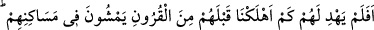
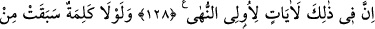
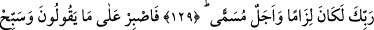
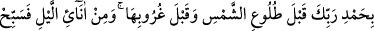
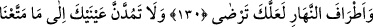
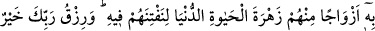
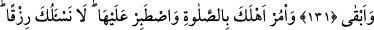
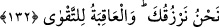

ÂİLENE NAMAZI EMRET!
KENDİN DE SABIRLA DEVAM ET!
128. Bizim, onlardan önce nice nesilleri helâk etmiş olmamız kendilerini yola
getirmedi mi? Halbuki onların yurtlarında gezip dolaşırlar. Bunda, elbette ki akıl
sahipleri için nice ibretler vardır.
129. Eğer Rabbinden, daha önce sâdır olmuş bir söz ve tayin edilmiş bir vâde
olmasaydı, (ceza onlar için de dünyada) kaçınılmaz olurdu.
130. (Rasûlüm!) Sen, onların söylediklerine sabret. Güneşin doğmasından önce
de batmasından önce de Rabbini övgü ile tesbih et; gecenin bir kısım saatleri ile
gündüzün etrafında (iki ucunda) da tesbih et ki, sen, Allah’tan hoşnut olasın,
(Allah da senden!).
131. Sakın, kendilerini denemek için onlardan bir kesimi faydalandırdığımız
dünya hayatının çekiciliğine gözlerini dikme! Rabbinin nimeti hem daha hayırlı,
hem de daha süreklidir.
132. Ailene namazı emret; kendin de ona sabırla devam et. Senden rızık
istemiyoruz; (aksine) biz seni rızıklandırıyoruz. Güzel sonuç, takvâ iledir.
“Bizim, onlardan önce nice nesilleri helâk etmiş olmamız kendilerini” yâni
Rasûlullah (s.a.)’in muâsırı olan müşrikleri “yola getirmedi mi?” Buradaki soru, tekdir
etmek için olan istifhâm-ı inkârîdir. Yâni, önceki asırlardan/nesillerden bir çoğunu
helâk ettiğimizden habersiz mi kaldılar, bu onlara açıklanmadı mı? Ya da Allah onlara
(kendilerinden önceki nice toplulukları helâk ettiğini) açıklamadı mı?”
“Halbuki
onların
yurtlarında
gezip
dolaşırlar.”
Halbuki
onlar
kendi
memleketlerinde emniyet içinde dolaşırlar. Ya da Hicr ve Semûd ashâbı ile Lût